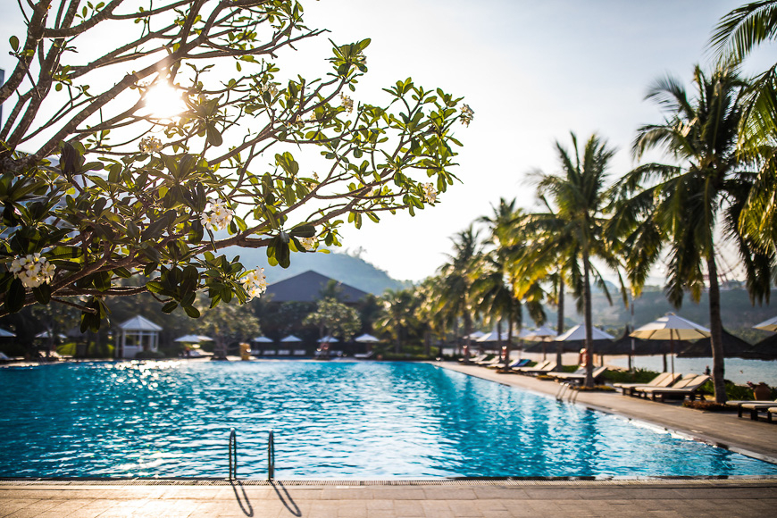
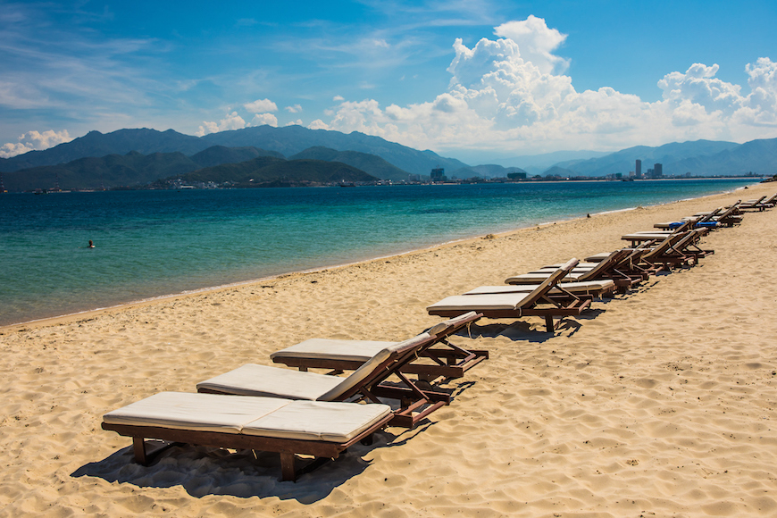
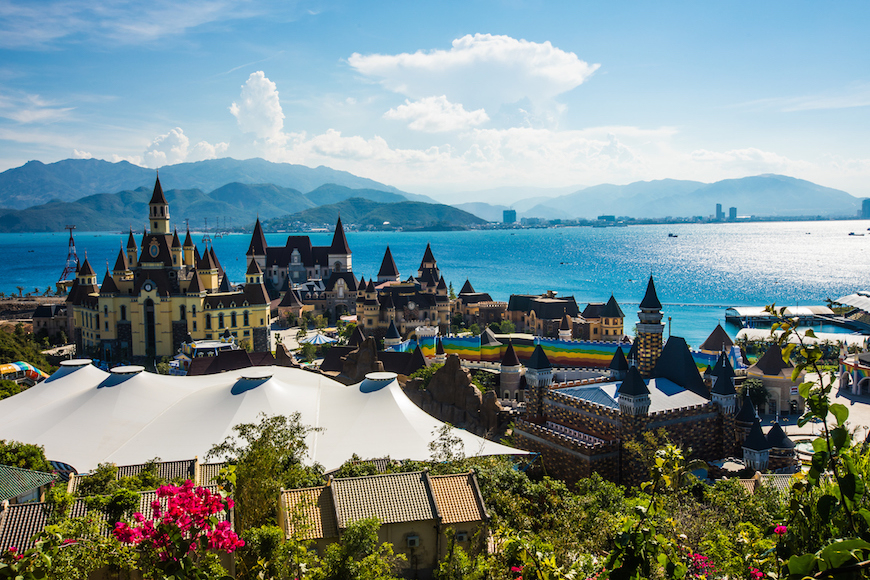
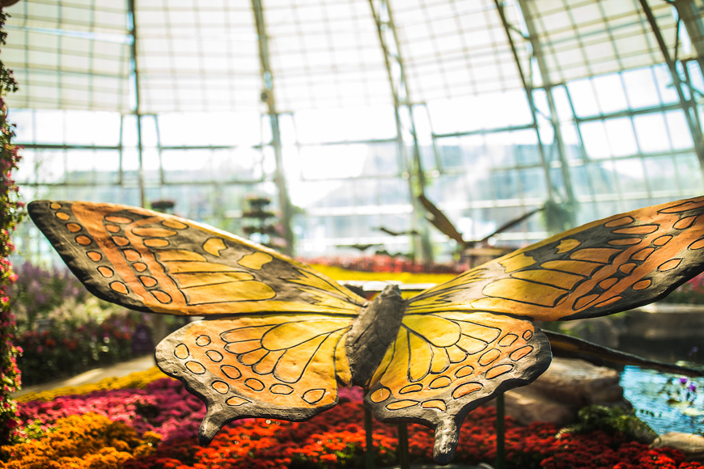
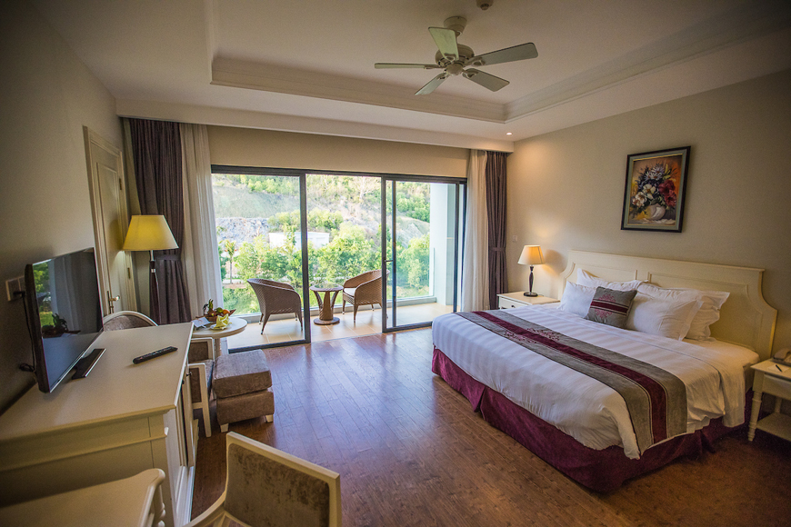
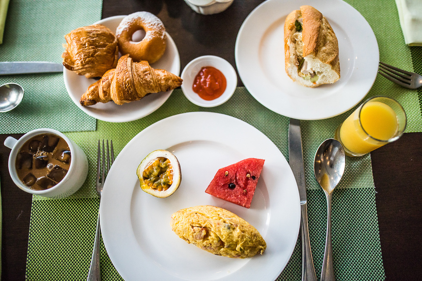
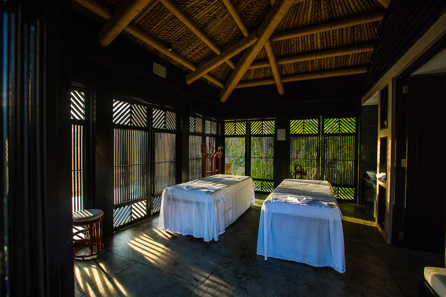
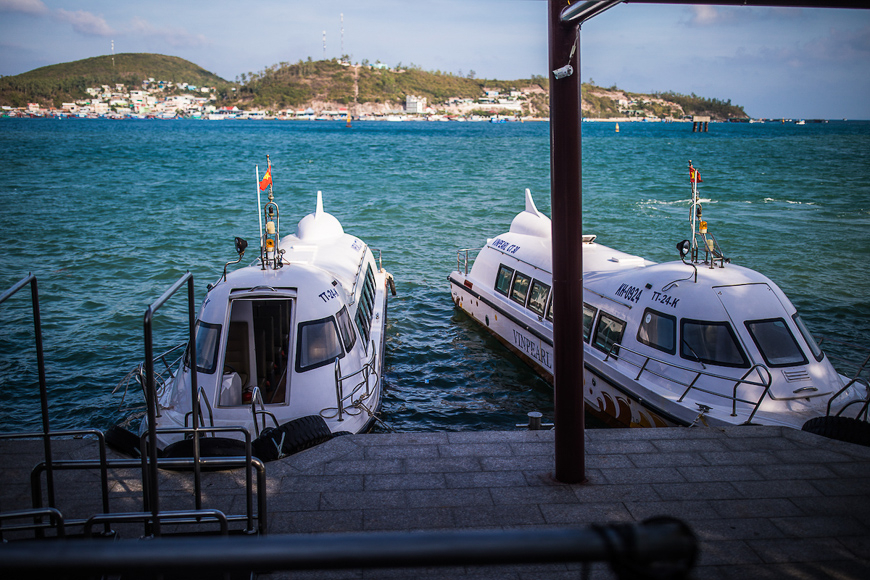
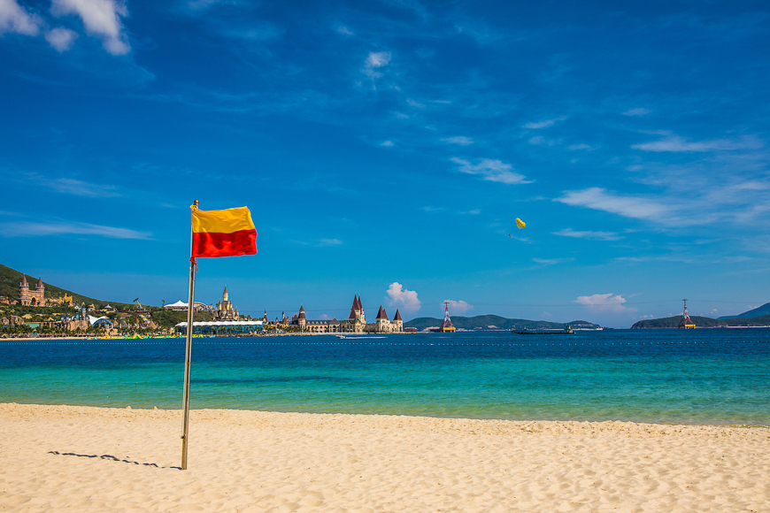

KỲ NGHỈ VUI VẺ TẠI VINPEARL NHA TRANG
Tại Vinpearl Nha Trang, mỗi ngày đều như một kỳ nghỉ lễ. Hòn đảo xinh đẹp này đã được biến thành điểm đến quanh năm cho những ai tìm kiếm sự hứng khởi và thư giãn ở Việt Nam. Với bãi biển tuyệt đẹp, tiện nghi 5 sao và công viên giải trí quy mô lớn, kỳ nghỉ tại Vinpearl là lựa chọn lý tưởng cho chuyến du lịch tràn ngập niềm vui dưới nắng. Dưới đây là những trải nghiệm nổi bật tại Vinpearl Resort & Spa Nha Trang Bay.
Ngày dài bên bãi biển và hồ bơi


Vinpearl Nha Trang sở hữu một trong những bãi biển đẹp nhất Việt Nam, với dãy ghế tắm nắng rợp bóng cây trên nền cát trắng mịn, nước biển trong xanh ấm áp. Dòng chảy nhẹ nhàng giúp nơi đây rất an toàn cho bơi lội. Ngoài ra, hồ bơi rộng lớn của resort với hai hồ nhỏ dành cho trẻ em và quầy bar thoáng mát là điểm thư giãn lý tưởng.
Phiêu lưu ở công viên giải trí


Chỉ với một vé Vinpearl Land, bạn có thể vui chơi cả ngày. Công viên nước là điểm nhấn, đặc biệt vào mùa hè với hồ tạo sóng, dòng sông lười và những đường trượt đầy màu sắc. Trên cao, Đồi Hoa Nở rực rỡ sắc hoa và cảnh quan xanh mát. Ngoài ra còn có tàu lượn, xe điện đụng, vòng xoay ngựa gỗ cùng nhiều nhà hàng, quán cà phê.
Trải nghiệm nghỉ dưỡng thư thái


Các gói dịch vụ trọn gói tại Vinpearl Resort & Spa Nha Trang Bay giúp kỳ nghỉ trở nên nhẹ nhàng, không lo tính toán. Phòng nghỉ hiện đại, rộng rãi, và mỗi ngày đều có buffet đa dạng từ món Việt, món Á đến món Âu. Khu vui chơi trẻ em và phòng gym hiện đại cũng sẵn sàng phục vụ khách lưu trú.
Liệu trình spa đẳng cấp


Nếu yêu thích chăm sóc sức khỏe, bạn không nên bỏ qua spa của Vinpearl Resort & Spa Nha Trang Bay. Khu lễ tân với gỗ chạm tối màu và ghế bành trắng tinh mang lại cảm giác an yên. Các bungalow trị liệu bao quanh hồ nước nhỏ, kèm phòng xông hơi và sauna chất lượng cao để thư giãn trước hoặc sau buổi trị liệu.
Chuyến đi thuyền và cáp treo ngắm cảnh


Việc di chuyển đến và rời Vinpearl Nha Trang cũng là một trải nghiệm thú vị. Chuyến tàu cao tốc chỉ mất 7 phút và hoạt động 24/24. Hoặc bạn có thể thử cáp treo 15 phút để chiêm ngưỡng vịnh Nha Trang lấp lánh và những con thuyền đánh cá ban ngày, hay ánh đèn thành phố rực rỡ vào ban đêm.